实验 3: 初次配置与驱动 Crazyflie 无人机
Initial Crazyflie Configuration and Operation
一、实验目标
在Linux虚拟机上配置crazyfile-client软件。
认识crazyfile无人机的结构。
分别使用有线和无线的方式将虚拟机的客户端与无人机相连接。
使用实例程序试飞一下无人机。
二、实验准备
实验2已经配置好ROS的Ubuntu20.04虚拟机。并且需要具备前几门实验已经积累的linux系统操作经验。
三、实验步骤
实验一：将cfclient的软件安装包拷贝到虚拟机的workspace文件夹中进行安装步骤
cfclient 软件安装包位于 course-materials/05_source_references/crazyflie-clients-python-master.zip。直接用图形化操作的方法，在主机windows的文件界面将该压缩包拖动进linux虚拟机的文件界面即可。
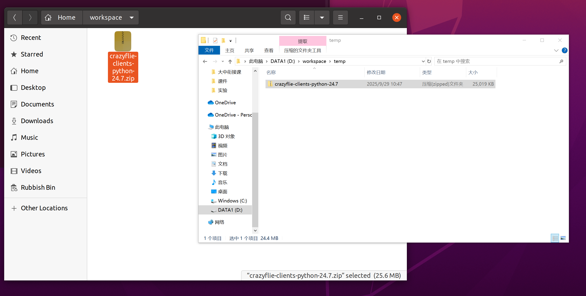
再双击 crazyflie-clients-python-master.zip，点击extract解压至该文件目录下。
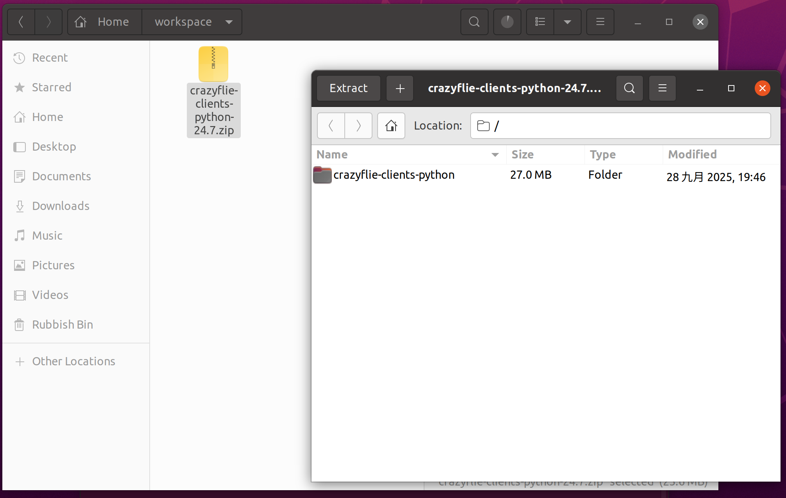
此时再点击绿色的extract按键
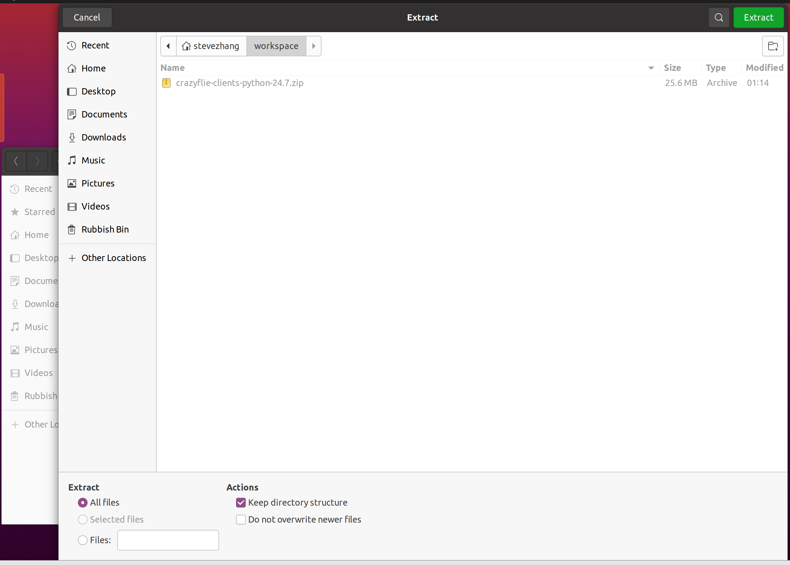
点击进入解压好的目录中，右键界面空白处选择open in terminal呼出终端。
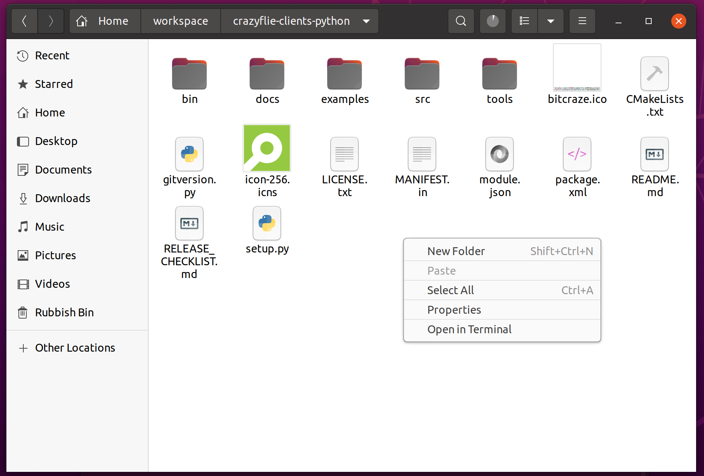
然后，首先我们先安装一些必要的依赖，首先直接复制如下命令粘贴至终端：
sudo apt-get install python3 python3-pip python3-pyqt5 python3-pyqt5.qtsvg按回车键输入命令，然后可能会要求输入用户密码以获得权限（此过程中已输入的密码内容和数量不可见），以及输入Y继续安装流程。
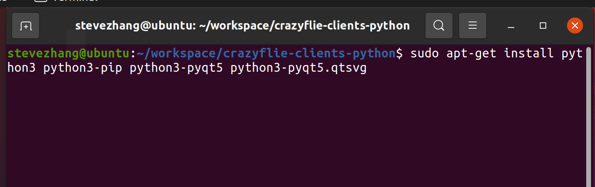
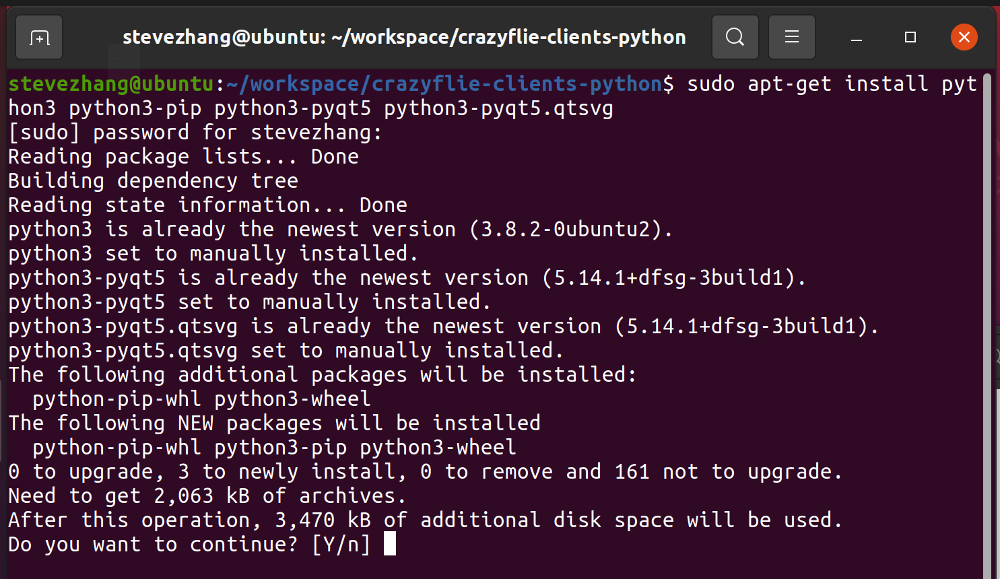
再输入以下命令安装其他依赖：
sudo apt install libxcb-cursor0 libxcb-xinerama0 libxkbcommon-x11-0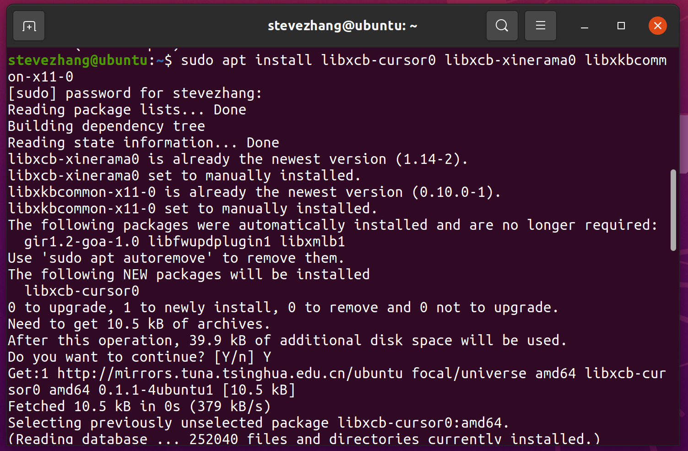
再输入以下命令配置一下pip3使用的软件源：
pip3 config set global.index-url https://pypi.tuna.tsinghua.edu.cn/simple再输入以下命令更新 Python 打包工具。Ubuntu 20.04 的 Python 3.8 环境中，直接升级到最新 setuptools 可能与旧版 importlib_metadata 冲突，并在后续安装时出现 AttributeError: module 'importlib_metadata' has no attribute 'EntryPoints'。因此这里固定 setuptools 到 71 以下，并补齐 importlib_metadata 和 testresources。
python3 -m pip install --user --upgrade pip wheel importlib_metadata testresources
python3 -m pip install --user --upgrade "setuptools<71"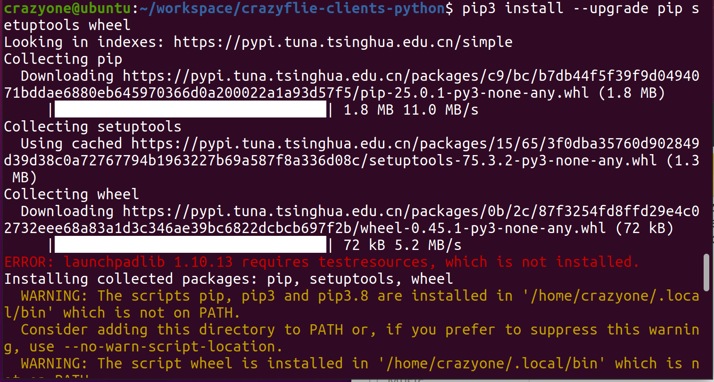
故障处理
如果已经执行过旧命令，并在 pip3 install -e . 时看到上述 EntryPoints 报错，先执行上面的两行工具修复命令，再回到 crazyflie-clients-python 目录继续执行下面的安装命令。
最后输入以下命令进行总的软件依赖安装整理：
python3 -m pip install --user -e .无报错安装完成之后，重启虚拟机，输入cfclient命令，出现如下界面则代表环境配置安装成功。
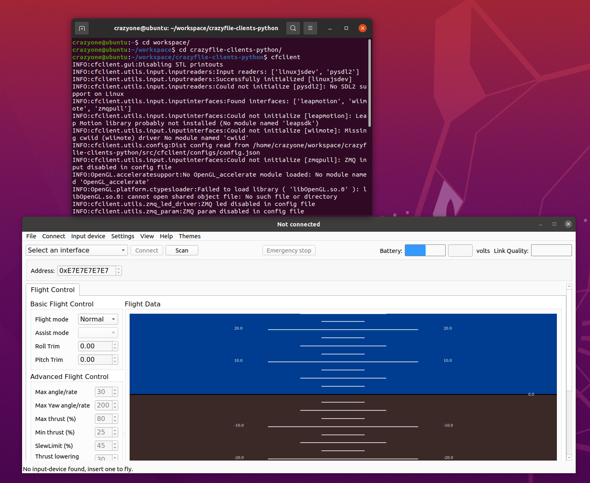
实验二：认识crazyfile无人机的基础结构
具体的无人机基础认知教程可参考course-materials中的网页快照：course-materials/01_web_snapshots/08_bitcraze_crazyflie_2x.html。
首先来认识一下无人机的基础组成部分，其基础的零件构成如下：
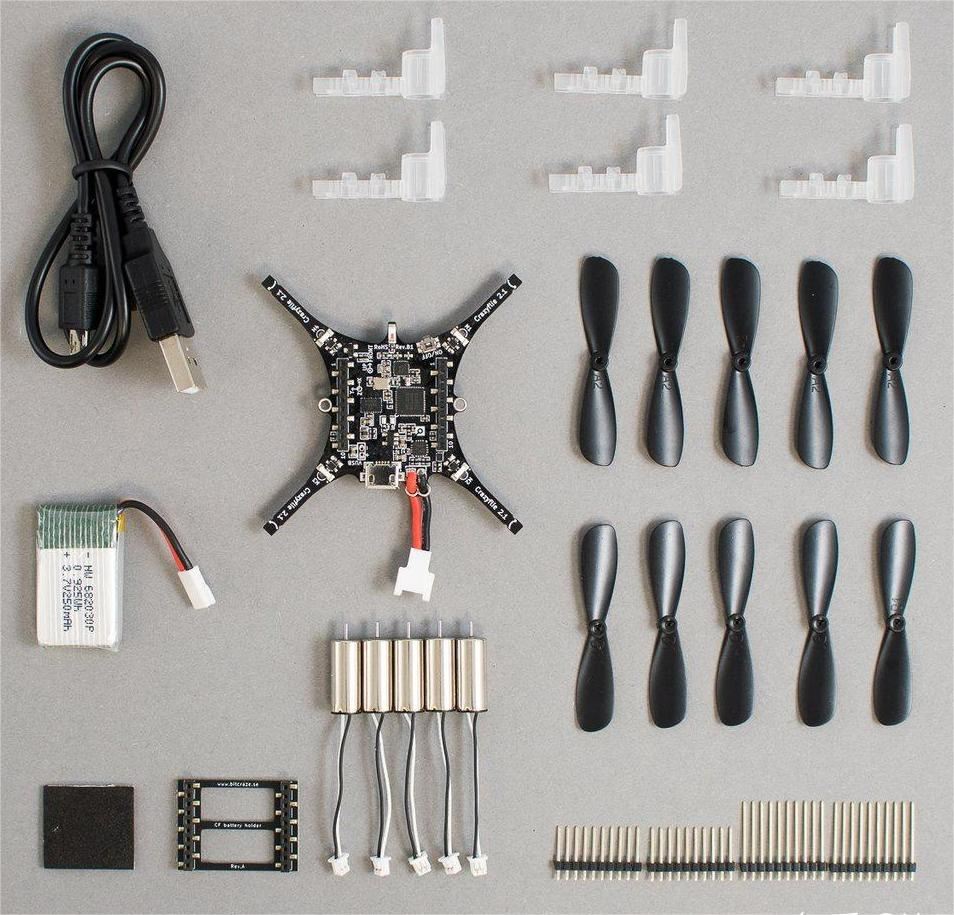
图 1 Crazyflie无人机的零部件
Crazyflie 2.X控制芯片板(即上图零部件中有4个arm的芯片板)在生产过程中已经被充分测试过，但是为了确保运输过程没有导致任何损害，还是需要在组装之前做测试。芯片板如下图，芯片板有四个LED灯(M1, M2, M3, M4)用于显示无人机状态和报错调试等，下图中有彩色的四个点就是，并有对应的标号①②③④。M1灯在右上，有红绿两种灯；M2灯右下，只有蓝灯；M3灯在左下，只有蓝灯；M4灯在左上，有红绿两种灯。
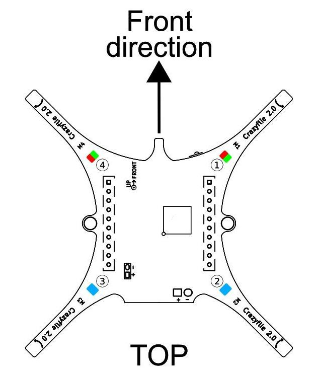
图 2 注意front direction的指向，以及四个LED灯
将Crazyflie 2.X芯片板用USB线连上电源。注意观察LED灯M1和M4， 如果M4会快速闪5次绿灯，则测试通过。
如何读懂LED灯的含义
Crazyflie 2.X如果all good：蓝色LED灯M2和M3(下方的两个灯)会是蓝的(不是闪)，并且M1会闪烁[2次/秒]红灯
Crazyflie 2.X如果all good，但是传感器还没被校准：蓝色LED灯M2和M3(下方的两个灯)会是蓝的(不是闪)，并且M1闪烁[0.5次/秒]红灯，即每2秒闪烁1次.
无线电通讯Radio connected：M4闪烁红and/or绿
电池电量低：M1会是红的(不是闪)
充电中：M3会闪烁蓝灯，同时M2是蓝灯(不是闪)
Bootloader Mode: M2和M3都闪烁蓝灯，约1次/秒
self-test失败：如果M1灯是快速闪5次红灯，并且停顿一段时间，再次重复短闪快速闪5次红灯，再停顿一段时间，如此重复，说明self-test是失败的。注意self-test与组装之前的测试(M4会快速闪5次绿灯，则测试通过。如果M1灯快速闪5次红灯，则失败)是不一样的
实验三：使用有线和无线的方式连接无人机
首先先配置linux虚拟机中的usb设备的权限，详细的操作可以参考course-materials中的网页快照：
course-materials/01_web_snapshots/09_bitcraze_usb_permissions.html
USB permissions | Bitcraze
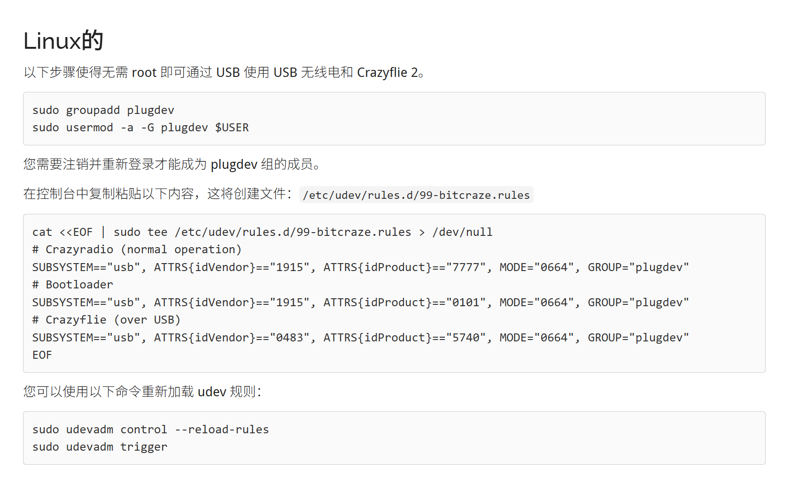
具体操作为在原目录的终端中依次输入以下命令：
sudo groupadd plugdev
sudo usermod -a -G plugdev $USER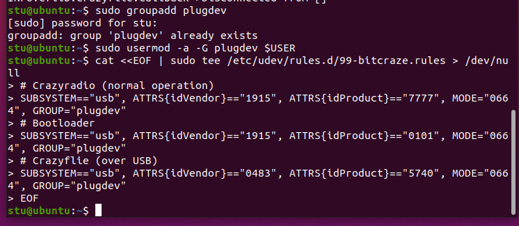
注意以下命令较长，复制粘贴的时候保证命令完整性：
cat <<EOF | sudo tee /etc/udev/rules.d/99-bitcraze.rules > /dev/null
# Crazyradio (normal operation)SUBSYSTEM=="usb", ATTRS{idVendor}=="1915", ATTRS{idProduct}=="7777", MODE="0664", GROUP="plugdev"
# BootloaderSUBSYSTEM=="usb", ATTRS{idVendor}=="1915", ATTRS{idProduct}=="0101", MODE="0664", GROUP="plugdev"
# Crazyflie (over USB)SUBSYSTEM=="usb", ATTRS{idVendor}=="0483", ATTRS{idProduct}=="5740", MODE="0664", GROUP="plugdev"
EOF
再输入以下命令：
sudo udevadm control --reload-rules
sudo udevadm trigger进行完以上操作后，输入sudo reboot的命令让虚拟机重启，以应用对usb权限的改动。
接下来再将无人机使用uab线连接到电脑上，弹出如下窗口使得该usb设备连接到虚拟机上。
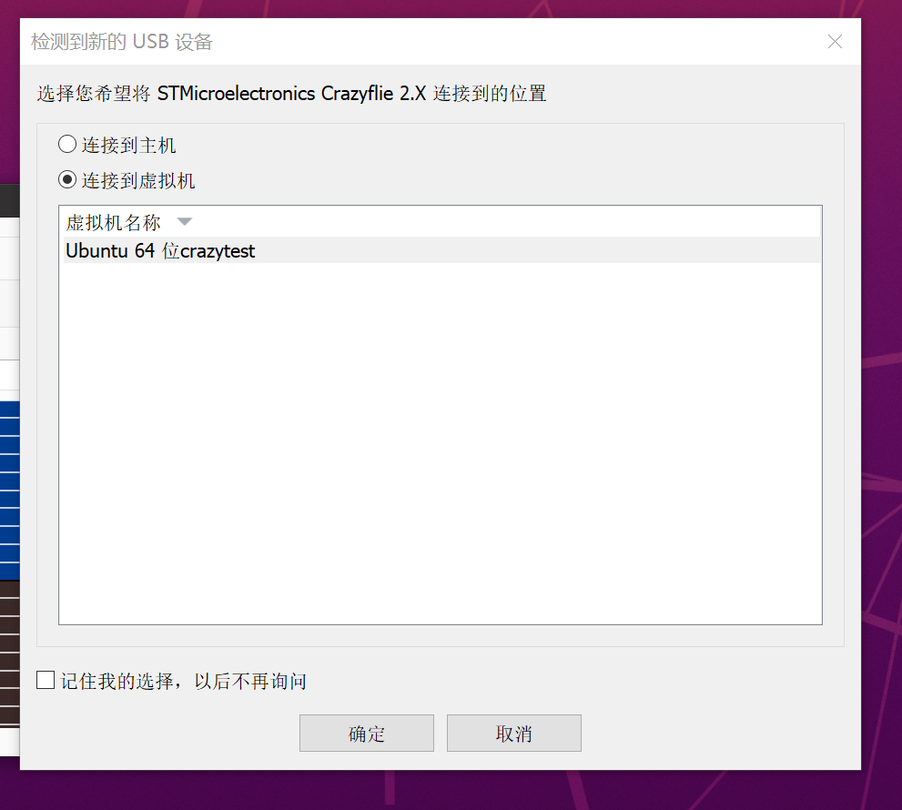
然后点击scan按钮，如下显示检测到无人机，选择usb：//0的选项点击connect。
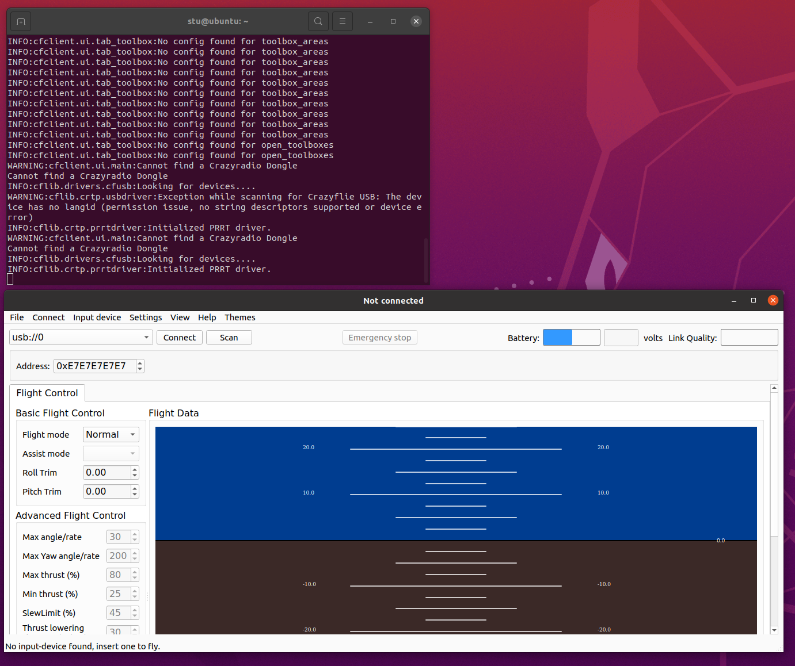
在连接的过程中保证无人机平放在桌面上以使得其能初始化陀螺仪等定位设备，出现以下界面则代表成功以有线的方式连接，此时手拿起无人机可以看到姿态界面中发生的变化。
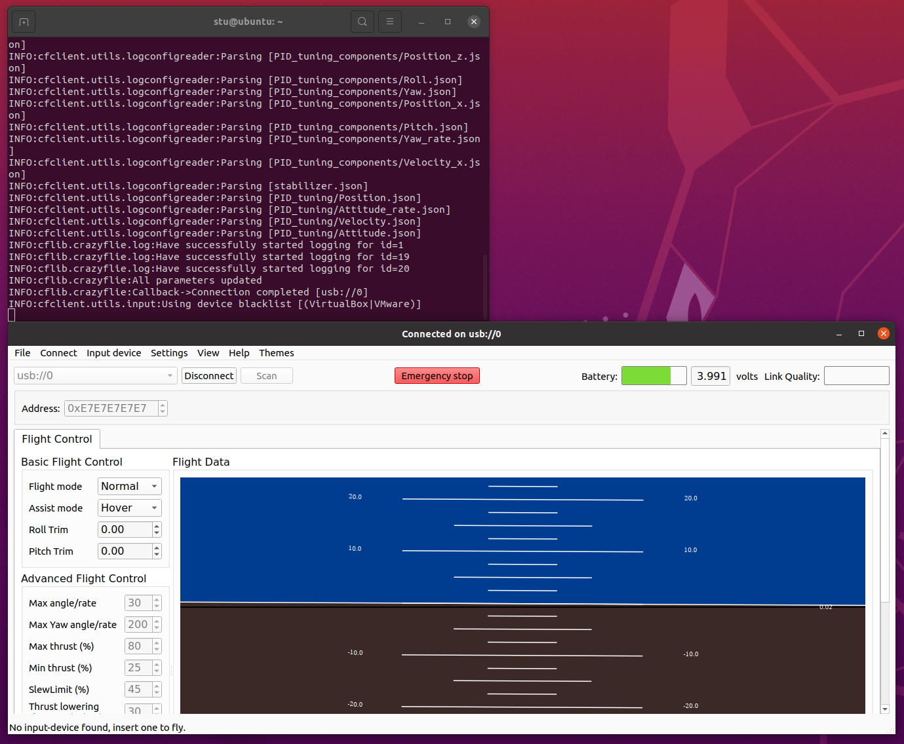
接下来，我们查看一下无人机上的无线地址，记住这个地址，选中复制，粘贴到主界面的address栏中，我们将会用crazyradio来以无线的方式连接到无人机。
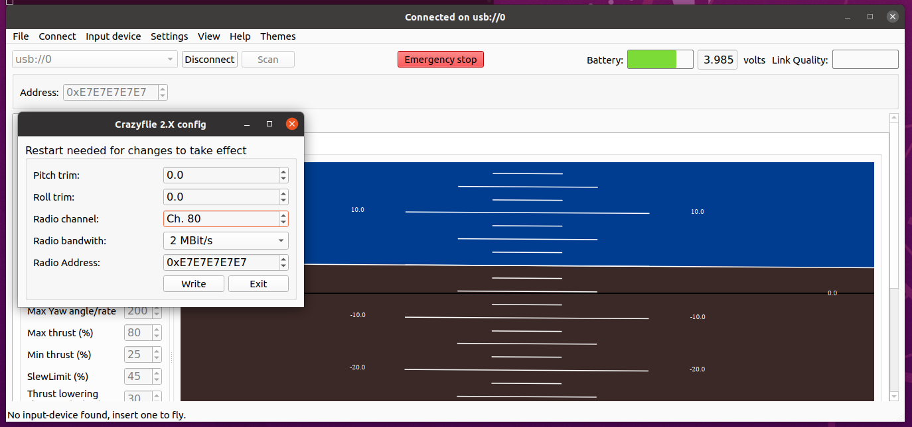
将无人机的usb线取下，插上crazyradio，用cfclient客户端scan到该设备，注意保证下方的address中的地址为刚才查看到的无人机的无线连接地址，再点击connect
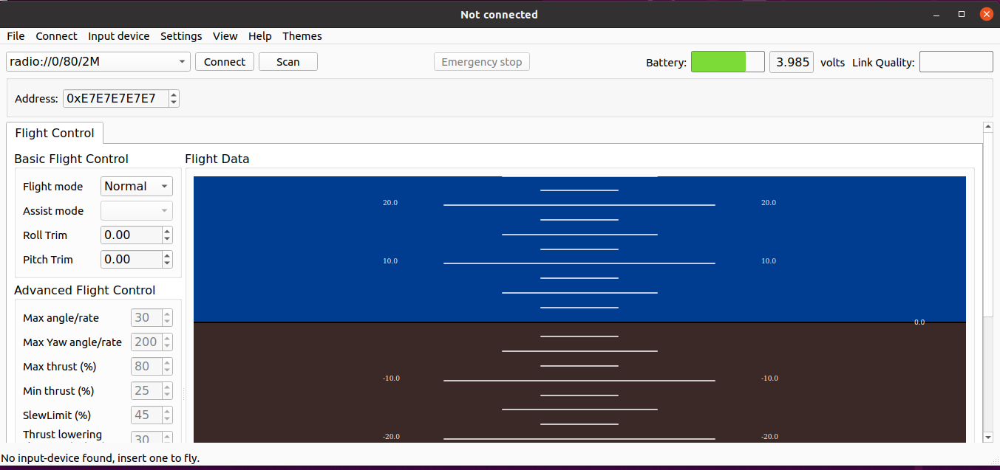
同样在连接的过程中保证无人机静止平放，使其能初始化姿态，出现如下界面，手上拿着无人机，姿态界面出现相应的变化，则以无线的方式连接成功。
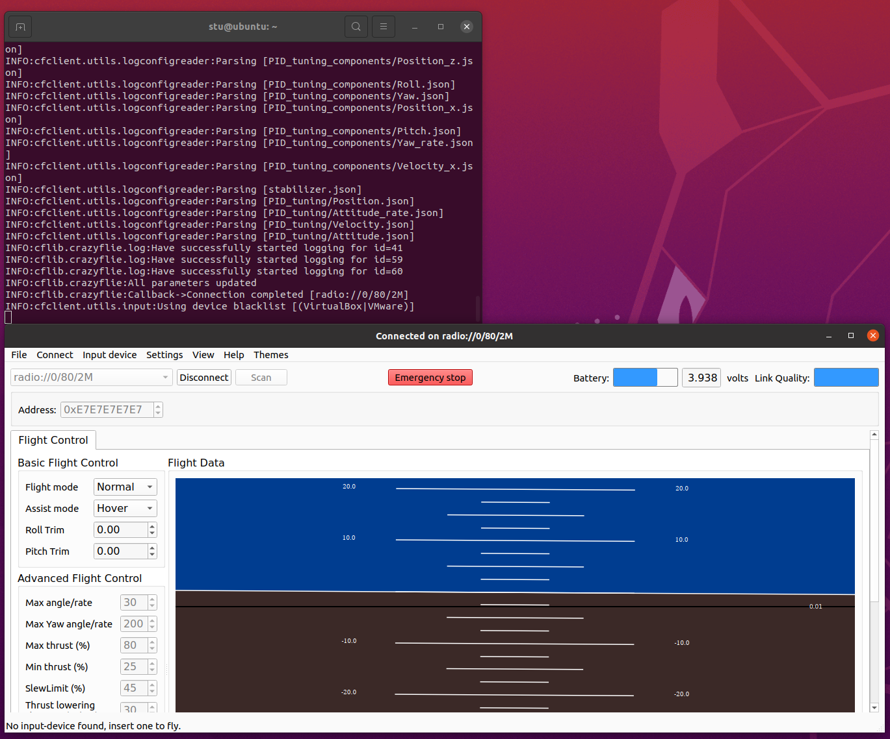
多组同时实验的无线频段规划
正式实验中如果多组在同一房间同时使用 Crazyradio，建议为每组固定一套完整的 radio URI。URI 格式为 radio://接口编号/信道/速率/地址，例如 radio://0/60/2M/E7E7E7E7A3。其中，信道用于减少同频无线拥塞，地址用于避免误连到其他组的无人机；只修改地址不能完全解决同频干扰问题。
| 组别 | 建议 URI |
|---|---|
| A组 | radio://0/40/2M/E7E7E7E7A1 |
| B组 | radio://0/50/2M/E7E7E7E7A2 |
| C组 | radio://0/60/2M/E7E7E7E7A3 |
| D组 | radio://0/70/2M/E7E7E7E7A4 |
| E组 | radio://0/80/2M/E7E7E7E7A5 |
配置时先用 USB 单独连接一架无人机，在 cfclient 中连接 usb://0，进入 Connect - Configure 2.x，写入该组分配的 Radio channel 和 Radio address，保存后重启无人机。之后该组的 cfclient 地址栏和所有 Python 脚本都应使用同一个完整 URI。
课堂注意事项
同一房间多组实验时，信道尽量拉开，例如间隔 10；每架无人机和每台电脑旁应贴上组别、channel、address 和完整 URI。正式飞行前先逐组单独测试连接，确认不会扫描或连接到其他组无人机。
实验四：使用python脚本让无人机自主起飞
核心部件
Flow Deck： Flow Deck 是一款激光雷达测距传感器板，用于测量Crazyflie无人机的高度和距离地面的距离。它可以帮助无人机进行高度定位和稳定悬停。
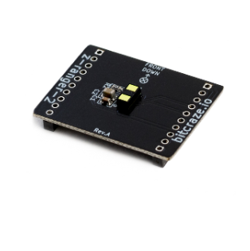
确保前面的操作已经可以使用crazyradio以无线的方式连接到无人机，
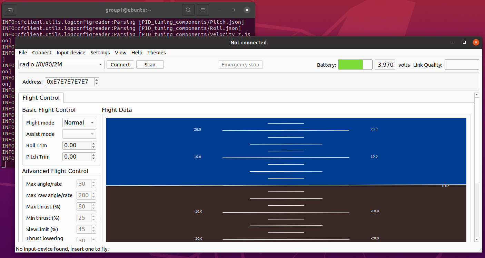
并且扫描到crazyradio之后，记住其radio的地址，如图所示为：//0/80/2M
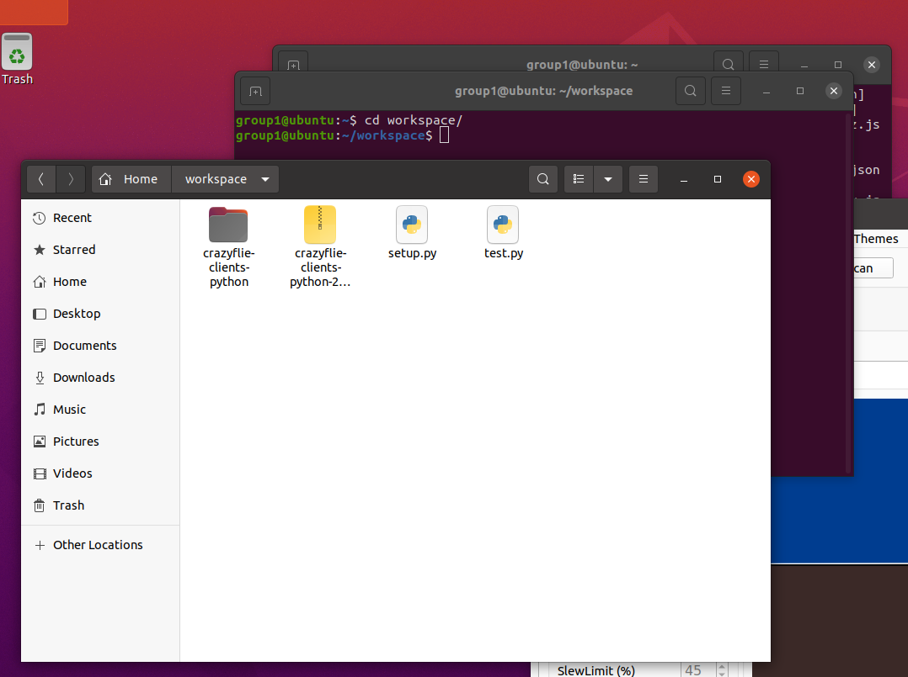
同时将要运行的python脚本放入workspace文件夹下，双击test.py脚本文件进行编辑，修改第14行的URI地址，与当前crazyradio的地址一致，修改完之后点击save按钮后退出。
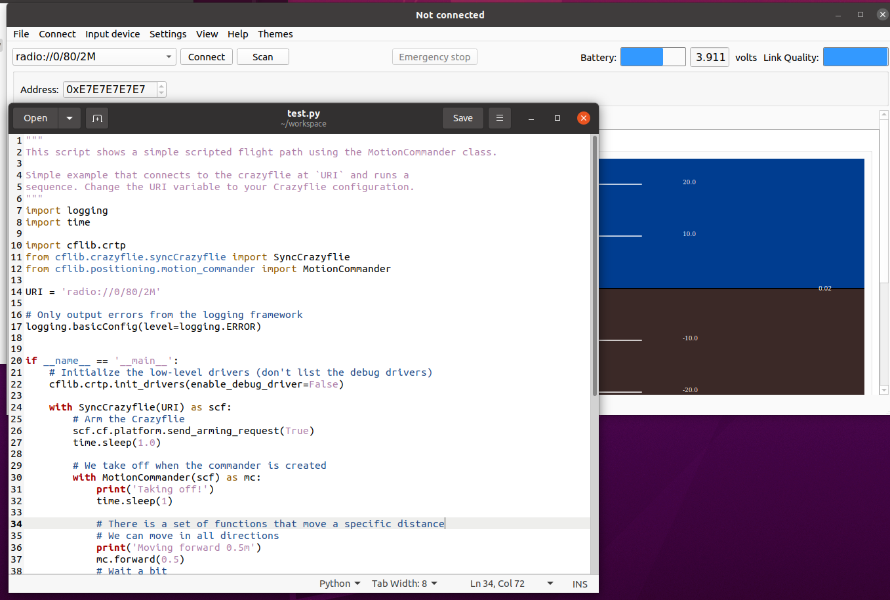
再安装最后一个所需的依赖，在终端中输入如下命令：
pip3 install cflib然后在终端中输入python3 test.py命令运行该脚本，脚本开始运行后，先等待一段时间的初始化，通过无线的方式向无人机发送指令，无人机接收到指令后进行相印的飞行动作。
补充，实验官方教程已保存到course-materials：course-materials/01_web_snapshots/07_bitcraze_stem_drone_bundle.html。
test.py脚本内容为：
import logging
import time
import cflib.crtp
from cflib.crazyflie.syncCrazyflie import SyncCrazyflie
from cflib.positioning.motion_commander import MotionCommander
URI = 'radio://0/80/250K' #Change to your cf2's URI
# Only output errors from the logging framework
logging.basicConfig(level=logging.ERROR)
if __name__ == '__main__':
# Initialize the low-level drivers (don't list the debug drivers)
cflib.crtp.init_drivers(enable_debug_driver=False)
with SyncCrazyflie(URI) as scf:
# We take off when the commander is created
with MotionCommander(scf) as mc:
print('Taking off!')
time.sleep(1)
# There is a set of functions that move a specific distance
# We can move in all directions
print('Moving forward 0.5m')
mc.forward(0.5)
# Wait a bit
time.sleep(1)
print('Moving up 0.2m')
mc.up(0.2)
# Wait a bit
time.sleep(1)
print('Doing a 270deg circle');
mc.circle_right(0.5, velocity=0.5, angle_degrees=270)
print('Moving down 0.2m')
mc.down(0.2)
# Wait a bit
time.sleep(1)
print('Rolling left 0.2m at 0.6m/s')
mc.left(0.2, velocity=0.6)
# Wait a bit
time.sleep(1)
print('Moving forward 0.5m')
mc.forward(0.5)
# We land when the MotionCommander goes out of scope
print('Landing!')链接资料整理
本节将手册中出现的外部链接整理为离线可读要点。为避免材料过长，网页内容以课堂用途和关键提示形式归纳，原始 URL 保留供课后查阅。
- 清华大学 PyPI 镜像源
原始链接：https://pypi.tuna.tsinghua.edu.cn/simple
课堂用途：用于提高 pip 安装 Python 依赖时的软件源访问速度和稳定性。
- 手册中的用途是设置 pip index-url，让 cflib、GUI 客户端和相关依赖安装时使用清华镜像源。
- 常用命令为：pip3 config set global.index-url https://pypi.tuna.tsinghua.edu.cn/simple
- 该链接本身是软件包索引入口，不是教程页面；离线材料保留用途说明即可。
- Bitcraze STEM drone bundle 入门（网页标题：Getting started with the STEM drone bundle | Bitcraze）
原始链接：https://www.bitcraze.io/documentation/tutorials/getting-started-with-stem-drone-bundle/
课堂用途：了解 Crazyflie 套件组成、充电、连接和首次飞行流程。
- 对应课堂中的硬件识别、Crazyradio 连接、客户端启动和基础试飞。
- 重点关注电池、桨叶、扩展板、无线连接和安全检查。
- 课堂实操仍以教师提供的设备编号、固件状态和场地安全要求为准。
- Bitcraze Crazyflie 2.x 入门（网页标题：Getting started with the Crazyflie 2.0 or Crazyflie 2.1(+) | Bitcraze）
原始链接：https://www.bitcraze.io/documentation/tutorials/getting-started-with-crazyflie-2-x/
课堂用途：补充 Crazyflie 2.x 的连接、固件、客户端和飞行前检查说明。
- 适合用于核对 Crazyflie 2.0/2.1 系列硬件和客户端操作逻辑。
- 建议重点看连接流程、客户端状态反馈、固件更新提醒和飞行安全提示。
- 如果课堂设备已经预配置，不建议学生自行更新固件。
- Bitcraze USB 权限配置（网页标题：USB permissions | Bitcraze）
原始链接：https://www.bitcraze.io/documentation/repository/crazyflie-lib-python/master/installation/usb_permissions/
课堂用途：解决 Linux 虚拟机或主机中普通用户无法访问 Crazyradio USB 设备的问题。
- 当 Python 脚本或客户端无法发现 Crazyradio 时，优先检查 USB 连接、虚拟机 USB 转接和权限规则。
- Linux 下通常需要添加 udev 规则，并重新插拔设备或重启相关服务。
- 课堂中若已由助教配置好权限，学生只需按排障清单确认设备可识别。